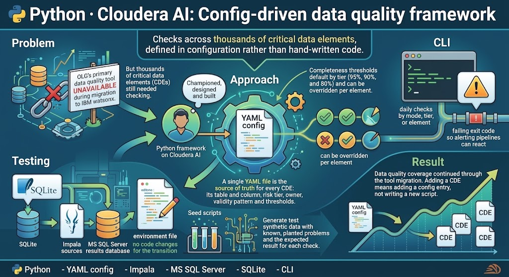

Python · Cloudera AI
Config-driven data quality framework
Checks across thousands of critical data elements, defined in configuration rather than hand-written code.
- Python
- YAML config
- Impala
- MS SQL Server
- SQLite
- CLI
- Problem
- OLG's primary data quality tool was unavailable during its migration to IBM watsonx, but thousands of critical data elements (CDEs) still needed checking.
- Approach
- Championed, designed and built a Python framework on Cloudera AI. A single YAML file is the source of truth for every CDE: its table and column, risk tier, owner, validity pattern and thresholds. Completeness thresholds default by tier (95%, 90% and 80%) and can be overridden per element. A command-line scheduler runs daily checks by mode, tier or element and returns a failing exit code so alerting pipelines can react.
- Testing
- It runs locally on SQLite and switches to Impala sources and an MS SQL Server results database by editing one environment file, with no code changes. Seed scripts create synthetic data with known, planted problems and the expected result for each check, so the framework is proven against a known answer before it touches production.
- Result
- Data quality coverage continued through the tool migration. Adding a CDE means adding a config entry, not writing a new script.
